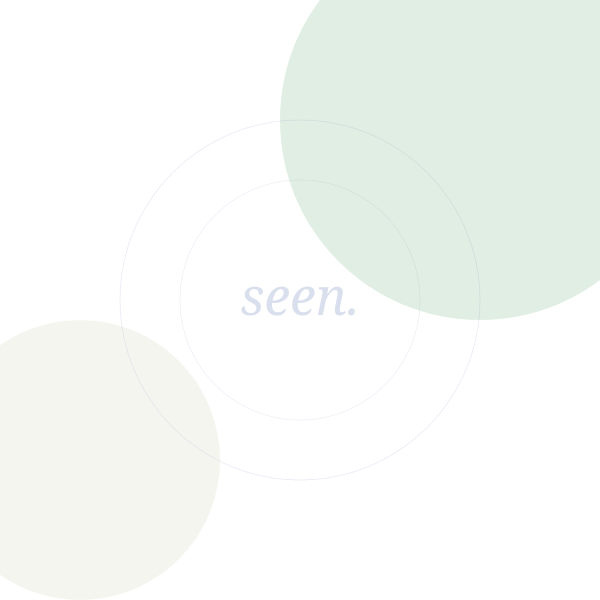

Burnout recovery
Identifying what depleted you, untangling obligation from identity, and rebuilding energy slowly and sustainably. No "hustle harder" advice here.
Peer Life Coach · California
Coaching for people who are still figuring out how to navigate a world that wasn't designed for them — neurodivergent folks, those managing mental health conditions, and queer and trans people finding their way.
I'm not a licensed mental health practitioner. I'm a coach — I bring lived experience and practical knowledge, not clinical treatment. If you're still figuring out who you are or what your diagnosis even means for your life… that's exactly where this work starts.


My story
I'm a late-diagnosed autistic person in recovery from a complex trauma disorder and other mental health conditions. I'm also queer, trans, and nonbinary. I know what it's like to spend years not understanding why the world feels so hard — and then, slowly, to build a life that actually works for you.
I became a life coach because I kept finding myself in conversations with people who needed exactly what I wish I'd had: someone with real, personal knowledge of these systems, challenges, and communities. Not a textbook. A person.
I'm new to coaching as a profession, and I'm honest about that. What I bring is lived expertise, deep empathy, practical skills, and the ability to sit alongside you without judgment — wherever you are.
Work with meClarity on what this is
I want to be upfront: I am not a licensed mental health practitioner, counselor, or psychologist. I haven't had clinical training, and I don't provide diagnosis, treatment, or therapeutic services.
What I offer is something different — and genuinely valuable. Peer coaching from someone who has navigated the same terrain you're navigating.
If you're in crisis or need clinical support, please reach out to a licensed provider. I'm happy to help you find one.
Coaching is
Coaching is not
What we work on
Identifying what depleted you, untangling obligation from identity, and rebuilding energy slowly and sustainably. No "hustle harder" advice here.
Learning to say no without guilt, recognising when your limits are being crossed, and building relationships that feel safer and more reciprocal.
Designing your home, work space, and daily routines to reduce overwhelm — from lighting and sound to clothing and social energy management.
Practical approaches to eating when sensory challenges, executive dysfunction, or low energy make cooking feel impossible. No diet culture. Just nourishment.
Creating flexible structures that account for variable energy, bad days, and the reality of neurodivergent time — without shame when things fall apart.
Building a creative practice that fits your actual life — overcoming perfectionism, finding your medium, and making art a consistent part of your world.
Systems navigation
California's Regional Centers (through the Department of Developmental Services) provide support to Californians with intellectual or developmental disabilities — including autism and cerebral palsy. Knowing what you're entitled to, how to ask for it, and what to do when the system pushes back can make an enormous difference. I can help you navigate that.
I also support clients finding gender-affirming resources, community, and habits — from social connections to everyday practices that affirm who you are.
Still figuring it out
Whether your diagnosis came last year or decades ago, there's often a moment — sometimes many of them — where you're left wondering what to do with the information. Relief and grief can arrive at the same time. So can confusion, or a quiet resistance to the idea that you need support at all.
You don't have to have it figured out to reach out. A lot of the people I work with are somewhere in that in-between space — not in crisis, not fully okay, just trying to make sense of things. That's exactly where coaching can help.
And you're allowed to take it slowly. There's no pressure to seek services, claim an identity, or do anything before you're ready. I'm here to walk alongside you, not to push.
California Regional Centers
California's Department of Developmental Services funds a network of Regional Centers that provide free, lifelong support to people with qualifying intellectual or developmental disabilities. Many people who qualify have never been told — or were told and didn't know where to start.
Qualifying conditions include:
I can help you understand whether you might qualify, what the process looks like, and how to advocate for yourself within the system.
Find your Regional Center →How it works
We meet, talk honestly about where you are, and see if working together makes sense. I'll tell you plainly if I think someone else might serve you better. No pressure, no pitch.
Before our first session, I'll reach out by email with some thoughts and questions. If you can reply to the email before we meet that is great, but if you only read and reflect on what's written we'll be able to have a productive chat. This email will inquire about your situation, your current challenges, what you've already tried, and what outcomes you want to achieve.
60-minute sessions, weekly, bi-weekly, monthly, or whatever. We go at a pace that works for your energy and life. I adapt to you — not the other way around.
Every strategy, resource, and insight we develop stays with you. The goal is for you to need me less over time, not more.
The discovery call is 30 minutes, free, and genuinely just a conversation. I want to understand what's hard for you right now — and be honest with you about whether I can help.
If we're a good fit, we'll take the next step together. If not, I'll do my best to point you somewhere useful.
And if you're not ready to book anything yet — that's okay too. Feel free to look around, sit with it, and come back when the time feels right.
I take on a small number of clients at a time so I can show up fully for each person.